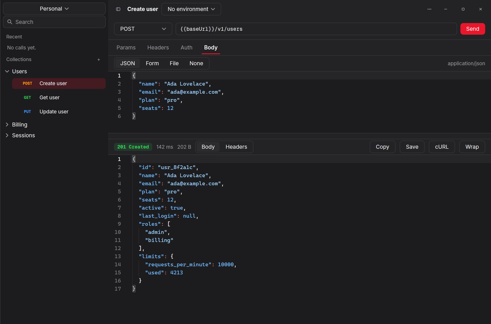
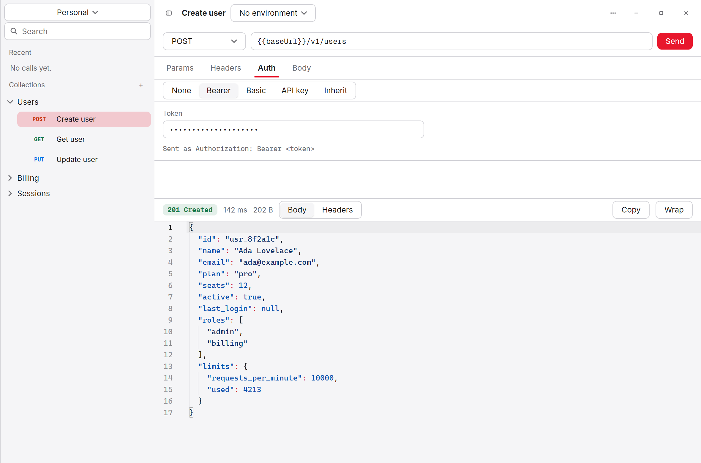
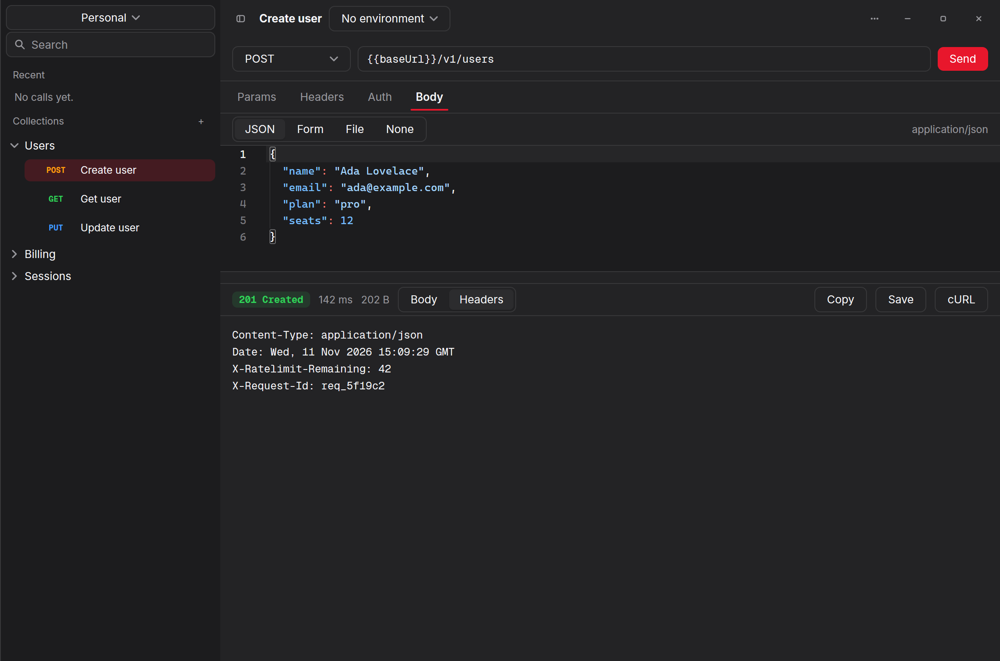

Windows
Windows 10 and 11, x64. Installer or a plain executable.
endpoint-setup-0.3.1-amd64.exeEndpoint 0.3.1 · Go 1.27 · MIT
Endpoint draws its own window on the GPU. It opens in a third of a second, holds under 90 MB, and keeps your tokens encrypted. Windows, macOS and Linux.

Environments
Write {{baseUrl}} in a URL or a header. Each environment fills it in when the request leaves.
No editing forty requests to change one host.

Secrets
The workspace is encrypted with AES-GCM under a key in your system's credential store. What sits in your profile folder is ciphertext.
Responses
Status, timing and size at a glance. The body folds by its braces in a code editor. Headers have a tab of their own, sorted, so rate limits and request ids do not hide.

Built to last
Each save keeps the one before it. A damaged workspace opens from the backup, and if neither reads the app starts fresh and tells you where the old file went.
Install
Windows 10 and 11, x64. Installer or a plain executable.
endpoint-setup-0.3.1-amd64.exeUniversal, Apple silicon and Intel. Unsigned: right-click and choose Open the first time.
endpoint-0.3.1.dmgDebian or Fedora package, or the archive with an install script.
endpoint_0.3.1_amd64.deb# build it yourself, with Go 1.27 or later go tool mygo dev # live reload go test ./... # the suite, offline go tool mygo build # package for this machine